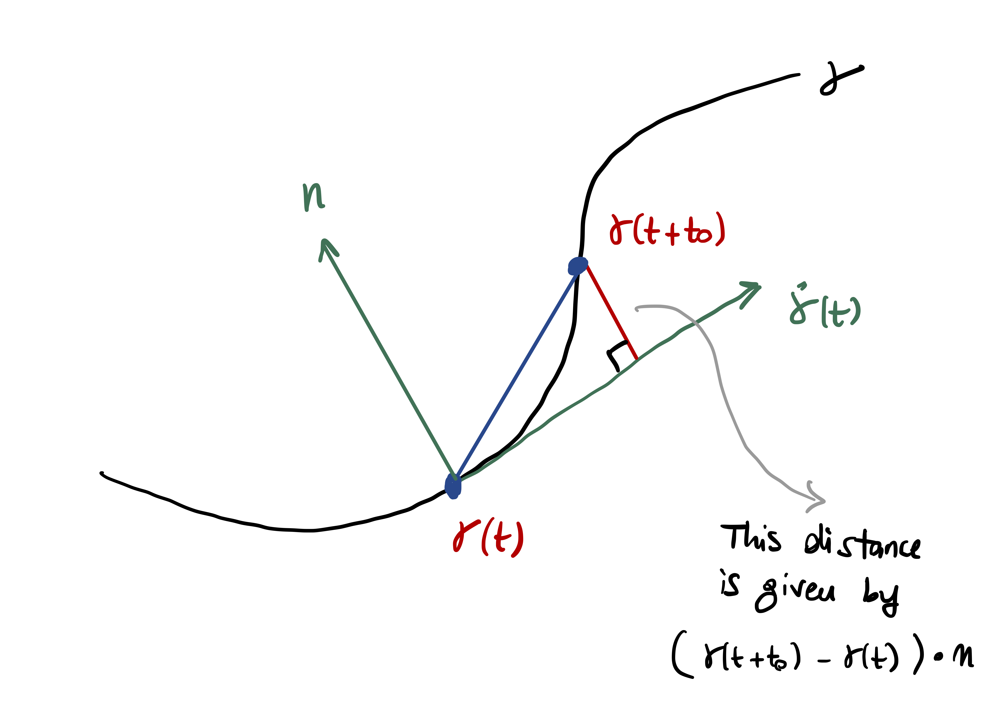
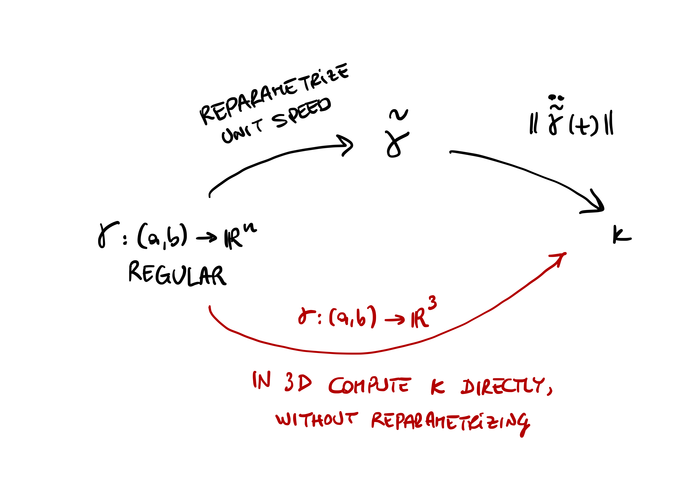
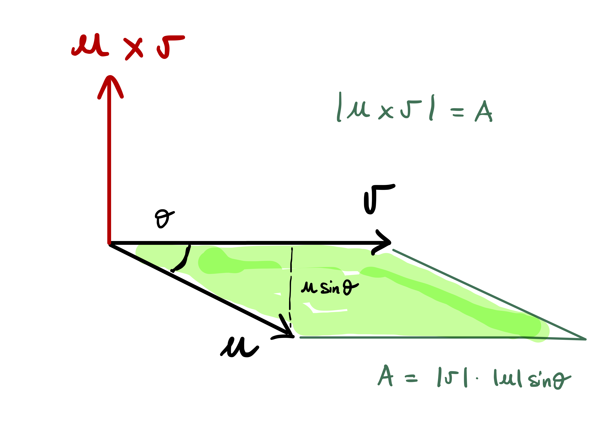

4 Curvature and Torsion
We have seen how to describe curves and reparametrized them. Now we want to look at local properties of curves:
- How much does a curve twist?
- How much does a curve bend?
We will measure two quantities:
- Curvature: measures how much a curve \(\gamma\) deviates from a straight line.
- Torsion: measures how much a curve \(\gamma\) fails to lie on a plane.
For example a 2D spiral is curved, but still lies in a plane. Instead the Helix both deviates from a straight line and pulls away from any fixed plane.
4.1 Curvature
We start with an informal discussion. Suppose \(\gamma\) is a straight line \[ \gamma(t) = \mathbf{a} + t \mathbf{v} \] with \(\mathbf{a}, \mathbf{v} \in \mathbb{R}^3\). The tangent vector to \(\gamma\) is constant \[ \dot\gamma(t) = \mathbf{v} \,. \] Whatever the definition of curvature will be, it has to hold that \(\gamma\) has zero curvature in this case. If we further derive the tangent vector, we obtain \[ \ddot\gamma(t) = 0 \,. \] Thus \(\ddot \gamma\) seems to be a good candidate for the definition of curvature of \(\gamma\) at the point \(\gamma(t)\).
Suppose now that \(\gamma\) is a curve in \(\mathbb{R}^2\) with unit speed. We have proven that in this case \[ \dot \gamma\cdot \ddot\gamma= 0 \,, \] that is, the vector \(\ddot \gamma\) is orthogonal to the tangent \(\dot \gamma\) at all times. Now let \(\mathbf{n}(t)\) be the unit vector orthogonal to \(\dot \gamma(t)\) at the point \(\gamma(t)\). The amount that the curve \(\gamma\) deviates from its tangent at \(\gamma(t)\) after time \(t_0\) is \[ ( \gamma(t + t_0) - \gamma(t) ) \cdot \mathbf{n}(t) \,, \tag{4.1}\] as seen in the figure below.

Equation (4.1) is what we take as measure of curvature. Since \[ \dot \gamma(t) \cdot \ddot \gamma(t) = 0 \quad \mbox{ and } \quad \dot \gamma(t) \cdot \mathbf{n}(t)= 0 \,, \] we conclude that \(\ddot \gamma(t)\) is parallel to \(\mathbf{n}(t)\). Since \(\mathbf{n}(t)\) is a unit vector, there exists a scalar \(\kappa(t)\) such that \[ \ddot \gamma(t) = \kappa(t) \, \mathbf{n}(t) \,. \] Note that, since \(\mathbf{n}\) is unitary, we have \[ \kappa(t) = \left\| \ddot \gamma(t) \right\| \]
Now, approximate \(\gamma\) at \(t\) with its second order Taylor polynomial: \[ \gamma(t+t_0) = \gamma(t) + \dot\gamma(t) t_0 + \frac{\ddot\gamma(t)}{2} t_0^2 + o(t_0) \] with the remainder \(o(t_0)\) is such that \[ \lim_{t_0 \to 0} \ \frac{o(t_0)}{t_0^2} = 0 \,. \] Therefore, forgetting about the remainder, \[ \gamma(t+t_0) - \gamma(t) \approx \dot\gamma(t) t_0 + \frac{\ddot\gamma(t)}{2} t_0^2 \,. \] Multiplying by \(\mathbf{n}(t)\) we get \[ (\gamma(t+t_0) - \gamma(t)) \cdot \mathbf{n}(t) \approx \dot\gamma(t) \cdot \mathbf{n}(t) t_0 + \frac{\ddot\gamma(t) \cdot \mathbf{n}(t) }{2} t_0^2\,. \] Recalling that \[ \dot\gamma(t) \cdot \mathbf{n}(t) = 0\,, \quad \ddot\gamma(t) \cdot \mathbf{n}(t) = \kappa(t) \,, \] we then obtain \[ (\gamma(t+t_0) - \gamma(t)) \cdot \mathbf{n}(t) \approx \frac{1}{2} \, \kappa(t) \, t_0^2 \]
Important
We take this as definition of curvature for a general unit speed curve in \(\mathbb{R}^n.\)
Definition 1
Note that \(\kappa(t)\) is a function of time. Therefore the curvature of \(\gamma\) can change from point to point.
Example 2
The curvature is defined for unit speed curves. To circumvent this, in the above example we computed a unit length reparametrization of the circle, and then computed the curvature of the reparametrization.
If \(\gamma\) is a regular curve, then one could do the same: first compute unit speed reparametrization \(\widetilde{\gamma}\), and from this compute the curvature. When \(\gamma\) is regular and has values in \(\mathbb{R}^3\), there is a way to compute \(\kappa\) without reparametrizing. To do this, we will need the notion of cross product, or vector product .

4.2 Vector product in \(\mathbb{R}^3\)
The discussion in this section follows (Carmo 2017). We start by defining orientation for a vector space.
Definition 3: Same orientation
When two basis \(b\) and \(\tilde{b}\) have the same orientation, we write \[ b \sim \tilde{b} \,. \] The above is clearly an equivalence relation on the set of ordered basis. Therefore the set of ordered basis of \(\mathbb{R}^3\) can be decomposed into equivalence classes. Since the determinant of the matrix of change of basis can only be positive or negative, there are only two equivalence classes.
Definition 4: Orientation
Definition 5: Positive orientation
Consider the standard basis of \(\mathbb{R}^3\) \[ e = (e_1,e_2,e_3) \] where we set \[ e_1 = (1,0,0)\,, \quad e_2 = (0,1,0) \,, \quad e_3 = (0,0,1) \,. \] Then:
- The orientation corresponding to \(e\) is called positive orientation of \(\mathbb{R}^3\).
- The orientation corresponding to the other equivalence class is called negative orientation of \(\mathbb{R}^3\).
For a basis \(b\) of \(\mathbb{R}^3\) we say that:
- \(b\) is a positive basis if it belongs to the class of \(e\).
- \(b\) is a negative basis if it does not belong to the class of \(e\).
Example 6
Consider instead \[ \tilde{e} = (e_2,e_1,e_3) \,. \] The matrix of change of variables between \(\tilde{e}\) and \(e\) is \[ (e_2 | e_1 | e_3 ) = \left( \begin{array}{ccc} 0 & 1 & 0 \\ 1 & 0 & 0 \\ 0 & 0 & 1 \\ \end{array} \right) \] and the latter has negative determinant. Thus \(\tilde{e}\) does not belong to the class of \(e\), and is therefore a negative basis.
We are now ready to define the vector product in \(\mathbb{R}^3\).
Definition 7: Vector product in \(\mathbb{R}^3\)
The following proposition gives an explicit formula for computing \(u \times v\).
Proposition 8
Proof
Proposition 9
The vector product in \(\mathbb{R}^3\) satisfies the following properties: For all \(u, v \in \mathbb{R}^3\)
- \(u \times v = - v \times u\)
- \(u \times v = 0\) if and only if \(u\) and \(v\) are linearly dependent
- \((u \times v) \cdot u = 0\), \((u \times v) \cdot v = 0\)
- Moreover for all \(w \in \mathbb{R}^3\), \(a,b \in \mathbb{R}\) \[ (au + bw) \times v = a u \times v + bw \times w \]
The proof, which is based on the properties of determinants, is omitted.
Remark 10: Geometric interpretation of vector product
Let \(u, v \in \mathbb{R}^3\) be linearly independent. We make some observations:
Property 3 in Proposition 9 says that \[ (u \times v) \cdot u = 0 \,, \quad (u \times v) \cdot v = 0 \,. \] Therefore \(u \times v\) is orthogonal to both \(u\) and \(v\).
In particular \(u \times v\) is orthogonal to the plane generated by \(u\) and \(v\).
Since \(u\) and \(v\) are linearly independent, Property 2 in Proposition 9 says that \[ u \times v \neq 0 \]
Therefore we have \[ (u \times v) \cdot (u \times v) = | u \times v |^2 > 0 \]
On the other hand, using the definition of \(u \times v\) with \(w = v \times w\) yields \[ (u \times v) \cdot (u \times v) = \left| \begin{array}{ccc} u_1 & u_2 & u_3 \\ v_1 & v_2 & v_3 \\ (u \times v)_1 & (u \times v)_2 & (u \times v)_3 \\ \end{array} \right| \]
Therefore the determinant of the matrix \[ (u | v | u \times v) \] is positive. This shows that \[ (u , v , u \times v) \] is a positive basis of \(\mathbb{R}^3\).
For all \(u,v,x,y \in \mathbb{R}^3\) it holds \[ (u \times v) \cdot (x \times y ) = \left| \begin{array}{cc} u \cdot x & v \cdot x \\ u \cdot y & v \cdot y \end{array} \right| \,. \tag{4.3}\] Indeed, one can check that the above formula holds for the standard vectors \(e_i\), and thus the general formula follows by linearity.
Using (4.3) we get \[\begin{align} |u \times v|^2 & = (u \times v) \cdot (u \times v) = \left| \begin{array}{cc} u \cdot u & v \cdot u \\ u \cdot v & v \cdot v \end{array} \right| \\ & = |u|^2|v|^2 - |u \cdot v|^2 \\ & = |u|^2|v|^2 - |u|^2 |v|^2 \cos^2(\theta) \\ & = |u|^2|v|^2 (1-\cos^2(\theta)) \\ & = |u|^2|v|^2 \sin^2(\theta) \\ & = A^2 \end{align}\] where \(A\) is the area of the parallelogram with sides \(u\) and \(v\).

We conclude with a summary of the above remark.
Remark 11: Summary: Properties of \(u \times v\)
Let \(u,v \in \mathbb{R}^3\) be linearly independent. Then
- \(u \times v\) is orthogonal to the plane spanned by \(u,v\)
- \(|u \times v|\) is equal to the area of the parallelogram with sides \(u,v\)
- \(u \times v\) is such that \[ (u,v,u\times v) \] is a positive basis of \(\mathbb{R}^3\).
4.3 Curvature formula in \(\mathbb{R}^3\)
Given a unit speed curve \[ \gamma\ \colon (a,b) \to \mathbb{R}^n \] we defined its curvature as \[ \kappa(t) = \left\| \ddot{\gamma}(t) \right\| \,. \] If \(\gamma\) is not unit speed then the curvature is not defined. However, when \(\gamma\) is regular, then we can find a unit-speed reparametrization \(\widetilde{\gamma}\) of \(\gamma\), and compute \(\kappa\) as \[ \kappa(t) = \left\| \ddot{\widetilde{\gamma}}(t) \right\| \,. \] If \(\gamma\) is a regular curve in \(\mathbb{R}^3\), there is a way to compute \(\kappa\) without passing through \(\widetilde{\gamma}\). The formula for computing \(\kappa\) is as follows.
Proposition 12
We delay the proof of the above Proposition, as this will get easier when the Frenet frame is introduced. For a proof which does not make use of the Frenet frame, see the proof of Proposition 2.1.2 in (Pressley 2010).
For now we use (4.4) the above proposition to compute the curvature on specific curves.
Example 13
4.4 Signed curvature of plane curves
The signed curvature is the rate at which the tangent vector \(\dot \gamma\) of the curve \(\gamma\) rotates. The signed curvature is:
- positive if \(\dot \gamma\) is rotating anticlockwise
- negative if \(\dot \gamma\) is rotating clockwise
A rigorous justification of the above statement is found in Proposition 2.2.3 in (Pressley 2010).
We do not prove the above theorem. For a proof, see Theorem 2.2.6 in (Pressley 2010).